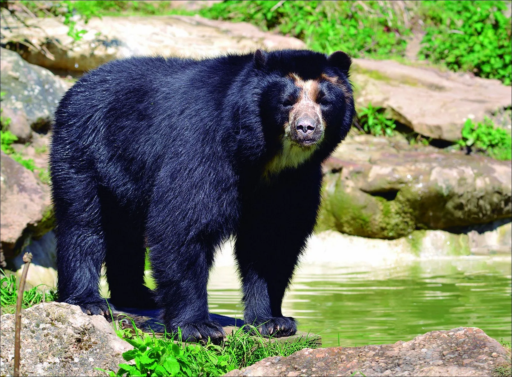
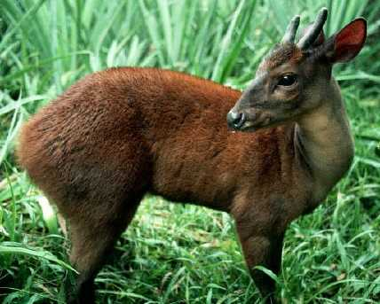
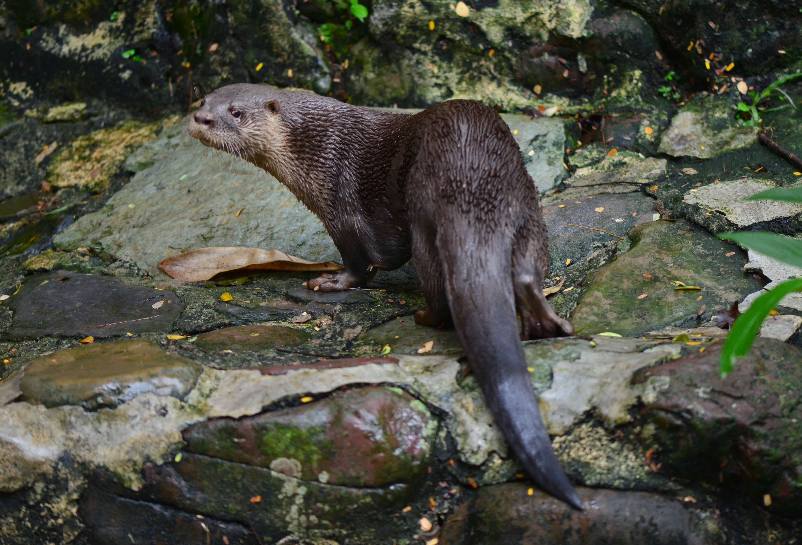
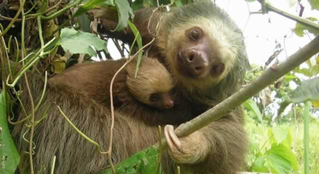
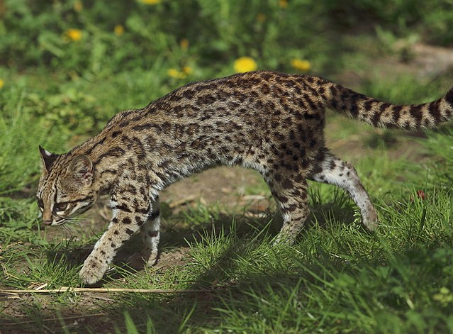
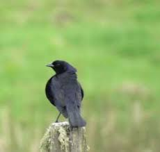

CUNDINAMARCA
Especies amenazadas
 Pato pico de oro |
 Caimán aguja |
 Oso Andino |
|  Venado Soche |
 Nutria |
 Perezoso |
 Condor de los Andes |
 Pato Andino |
 Polla sabanera |
 Cucarachero de Apolinar |
 Pez capitán de la sabana |
 Oncilla |
 Nutria neotropical |
 Venado de cola Blanca |
 Lepidóptero prepona de montaña |
 Cangrejo sabanero |
 Tingua Bogotana |
Especies invasoras
 Cangrejo Rojo Americano |
 Caracol Gigante Africano |
 perros ferales |
 Rana toro |
 Tilapia Nilo |
 Chamón |
 Caracol de jardín |
 Ganzo del nilo |
 Pez basa |
 Pato de collar |